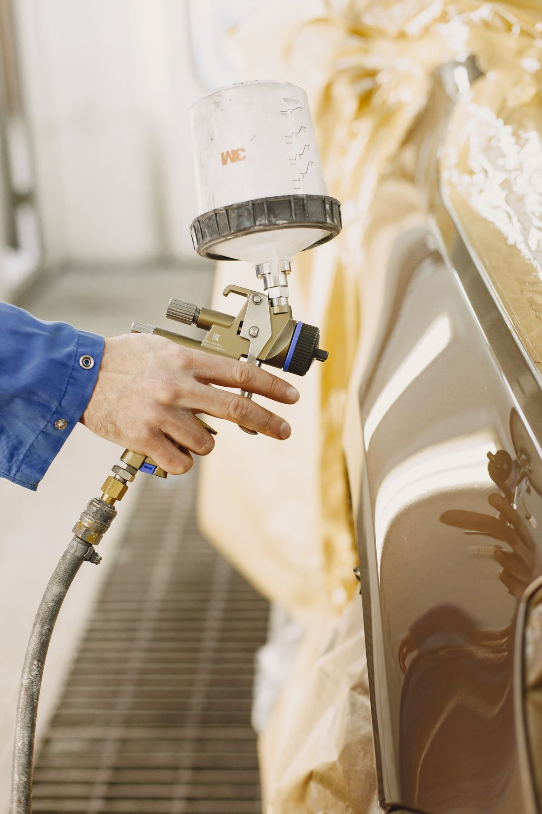

Process

Good paint is mostly preparation. Most of the time your car spends with us happens before a single drop of color goes on, and that is what makes the finish last.
- Inspect: we measure paint thickness and mark every flaw.
- Sand: we take the damaged layers down to a clean, smooth base.
- Prime: primer seals the metal and fills tiny scratches.
- Paint: color is sprayed in thin coats in our booth.
- Clear Coat: a glossy protective layer goes over the color.
- Cut and Polish: we wet sand and polish the clear until it looks like glass.
We send you photos at each step, so you can watch your car shed its old skin.